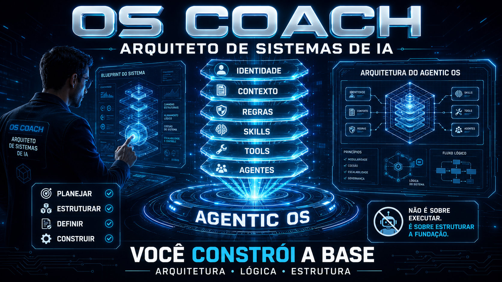
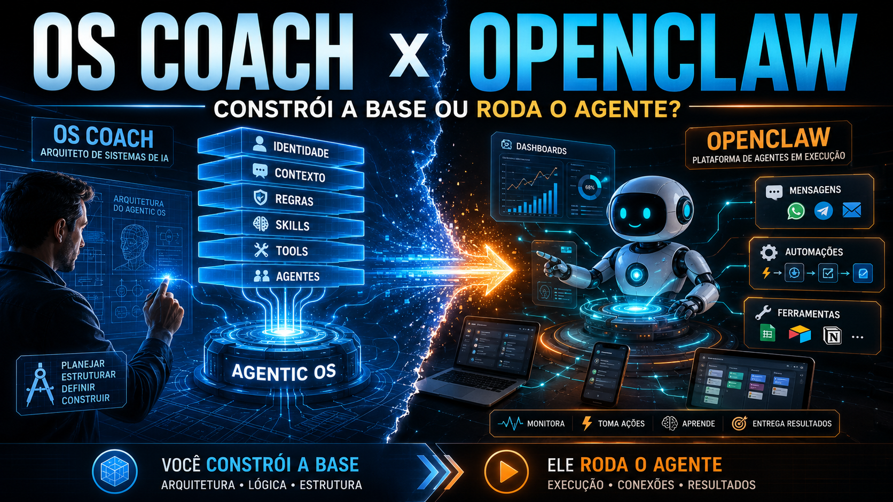

Engenharia de Sistemas Operacionais de IA — do zero ao OS vivo
Construa centros de comando de IA, uma camada por vez, sem virar engenheiro. A tese do curso: não instale um OS agente — cultive-o.
Como ler: a pilha se constrói de baixo para cima. As camadas de baixo (Identidade, Substrato, Regras) são a fundação estática; as de cima (Habilidades, Ferramentas, Agentes) são a ação. O erro nº1 é pular direto para o topo (Agentes).
Seu progresso, dúvidas e anotações ficam salvos só no seu navegador (localStorage). Use Minha jornada para exportar/importar.
O que é um Sistema Operacional de IA
Um Sistema Operacional de IA (AIOS) é, na essência, um centro de comando para um domínio específico da sua vida ou do seu negócio. Não é um produto único que você instala — é um punhado de pastas + um arquivo de identidade (o CLAUDE.md), agnóstico à ferramenta (serve Claude Code, Codex, open code).
O autor mantém vários: um Freedom OS (residências e passaportes), um Tax OS (leis e auditorias), um Skool OS (anúncios na voz dele), além de Health OS e Marketing OS. Cada domínio vira um OS sob medida. A regra de ouro: cultive, não instale — um fim de semana leva a 80%, mas só fica sólido com uso diário e auditoria.
As 6 camadas — e a pizza que não é dividida igual
Todo OS tem as mesmas seis camadas, mas o "gráfico de pizza" muda de forma a cada domínio: num Tax OS o contexto pesa ~34%; num Sales OS, ferramentas e skills dominam. A ordem que funciona vai da fundação à ação.
A alma. Quem o OS é, a quem serve, o que recusa. Vive no CLAUDE.md.
Os bastidores. O conhecimento bruto e destilado em que o OS roda. A maior camada.
As cercas. Regra = sugestão forte; gancho = determinístico (sempre/nunca).
Os verbos conquistados. Tarefas repetíveis. Comece manual, depois capture.
Os fios pra fora. A pergunta: skill, CLI, MCP ou API? CLIs read-only para segurança.
Papéis com julgamento que orquestram skills. A ÚLTIMA camada — não a primeira.
OS Coach × OpenClaw: você constrói a base, ele roda o agente
Este curso te ensina a estruturar a fundação: Identidade, Contexto, Regras, Skills, Tools e Agentes. Primeiro você constrói a base; só depois um agente entra em execução em cima dela. É aí que entra uma plataforma de execução como o OpenClaw (o "Jarvis" que roda os agentes): mensagens, automações, ferramentas e dashboards. O OS Coach prepara a base; o OpenClaw roda o agente.

As 5 trilhas
📦 O que é, as 6 camadas e o glossário
O modelo mental e o vocabulário. Ninguém avança sem entender os termos. 3 módulos.
🪪 Identidade, Substrato e Regras
As camadas de fundação (estáticas). Sem elas, agentes não têm em que se apoiar. 3 módulos.
🤖 Habilidades, Ferramentas e Agentes
As camadas de ação (dinâmicas). Verbos e braços ao OS — só depois da base. 3 módulos.
⚙️ Seu primeiro OS com o /os-coach
100% mão na massa: do start ao audit, camada por camada. 6 módulos.
🗽 Domínios reais & produção
A pizza muda de forma em 6 domínios (Tax, Sales, Support, Content, Consulting, Freedom) + padrões de produção. 6 módulos.
Pré-requisitos
✓ Você precisa de
- ✓Claude Code (ou Codex / open code) instalado.
- ✓Saber abrir uma pasta e digitar comandos simples no terminal.
- ✓Um domínio em mente (negócio ou vida pessoal) para construir o seu OS.
Não precisa de
- •Nenhuma linguagem de programação. A IA escreve os scripts.
- •Experiência prévia com agentes ou MCP — tudo é definido inline na 1ª aparição.
- •Servidor ou build: as páginas abrem direto no navegador (até em file://).
Créditos e fonte
Curso baseado no módulo do Living Course da comunidade earlyaidopters + a skill open-source OS Coach. O /os-coach guia uma pessoa não técnica a construir o próprio OS agêntico, uma camada por vez, no loop Perguntar → Construir → Persistir → Próximo → Auditar.
github.com/inematds/os-coach ↗